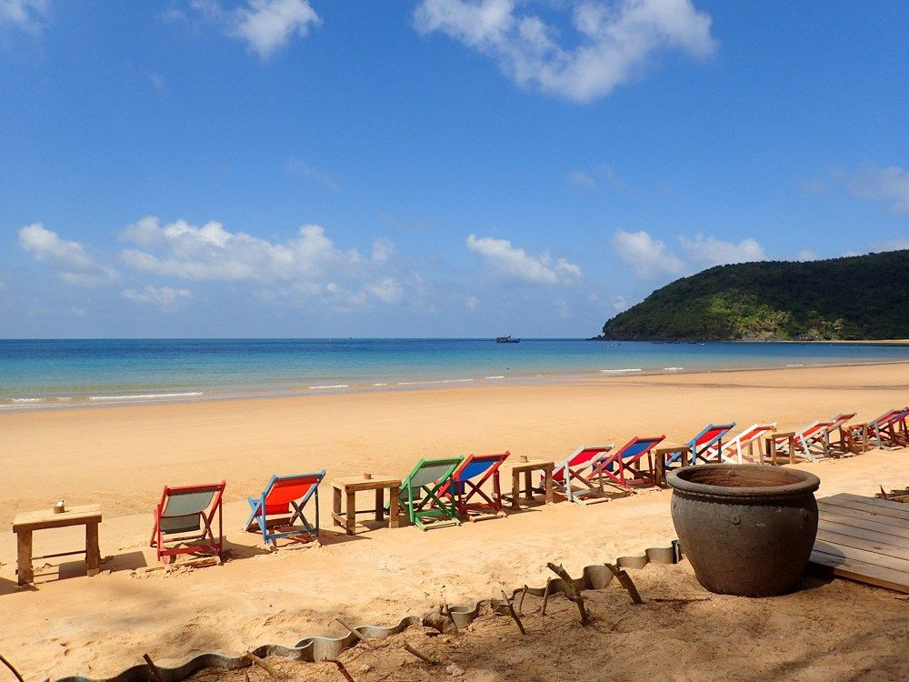
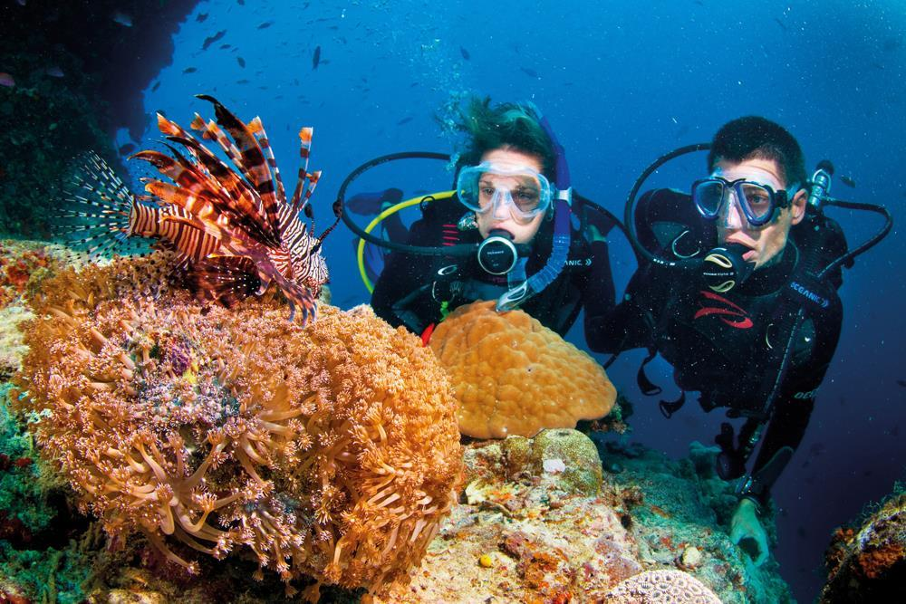
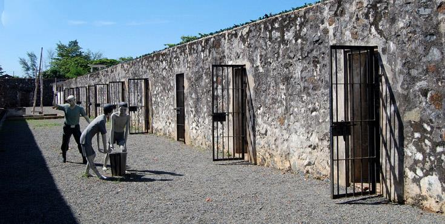
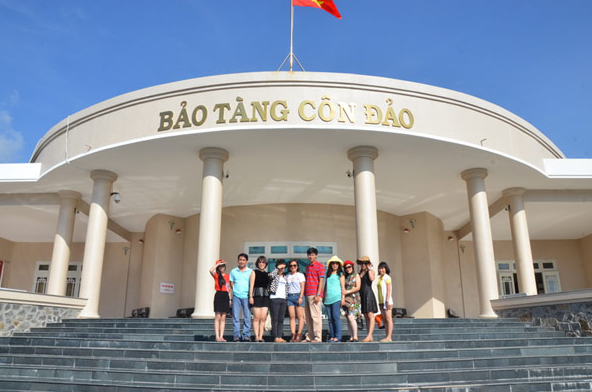

Du lich Côn Đảo - Hành trình đến với thiên nhiên kỳ thú
Côn Đảo (thuộc tỉnh Bà Rịa – Vũng Tàu) nổi tiếng với những bãi tắm đẹp hoang sơ, cát trắng mịn làm say mê du khách. Ngoài ra, không khí trên đảo rất trong lành, được ví như thiên đường nghỉ dưỡng, là điểm đến tuyệt vời cho những ai đang muốn “trốn” ồn ào, náo nhiệt ở phố thị.
Vị trí: Côn Đảo là một vùng đảo đầu tiên nằm ở đông nam nước ta, gồm 16 hòn đảo lớn nhỏ. Cách Vũng Tàu 97 hải lý và cách Sông Hậu 45 hải lý. Giờ Mở Cửa: Cả ngàyDu lịch Côn Đảo (Ảnh ST)
1. Thời gian du lịch Côn Đảo lý tưởng
-
Thời gian từ ra tết đến hết mùa hè, từ tháng 3 đến hết tháng 9 là thời gian tốt nhất để đi du lịch Côn Đảo.
Tuy nhiên, từ tháng 10 đến tháng 2, mặc dù vùng biển Côn Đảo thường có sóng lớn nhưng vì thời gian này là
mùa khô nên luôn có ánh nắng chan hòa và cũng là thời gian đáng để đến Côn Đảo.
Cảnh đẹp Côn Đảo (Ảnh sưu tầm)
Tháng 3 đến hết tháng 9 là thời gian biển êm, dù là mùa mưa nhưng các trận mưa ở Côn Đảo chủ yếu là mưa rào kéo dài không quá 1h đồng hồ, các thời gian khác trong ngày vẫn có ánh nắng chan hòa. Thời gian này thích hợp cho các tour tham quan trên biển, lặn ngắm san hô và khám phá đảo hoang. Đây cũng là mùa rùa từ khắp nơi về Côn Đảo đẻ trứng. Tháng 10 đến hết tháng 2, do ảnh hưởng gió Đông Bắc, vùng biển của Vịnh Côn Sơn thường có sóng lớn nhưng mặt ở phía Tây và Tây Nam mặt biển vẫn ềm đềm và ít chịu tác động của sóng gió. Cảnh đẹp Côn Đảo (Ảnh sưu tầm)
2. Trải nghiệm phải thử và những điểm tham quan khi đến Côn Đảo
-
Côn Đảo bao gồm các tiểu đảo khác nhau như hòn Bảy Cạnh, hòn Tài, hòn Tre, hòn Trứng, hòn Trác hay hòn Cau…
là nơi hội tụ các dải san hô với mật độ cao bậc nhất Việt Nam, nơi lý tưởng để khám phá thế giới đại dương kỳ thú.
Tại những địa điểm lặn đã được thăm dò trước, du khách sẽ được hướng dẫn các thao tác cơ bản và lặn cùng với chính người hướng dẫn.

Hình ảnh lặn biển ngắm san hô (Ảnh sưu tầm)
-
Hòn Bảy Cạnh nằm ở phía Đông Côn Đảo, có diện tích 683ha, gồm hai phần đảo nối liền với nhau bằng doi cát
ở giữa gọi là Bãi Cát Lớn. Đây cũng là 1 trong 14 bãi đẻ trứng của rùa biển Côn Đảo và là bãi biển có số lượng
rùa lên đẻ trứng nhiều nhất ở Côn Đảo. Trong mùa sinh sản (từ tháng 4 – 9 hàng năm), đêm ít nhất 1 – 2 cá thể,
đêm nhiều có từ 20 – 30 cá thể rùa mẹ lên bãi làm tổ và đẻ trứng.
Hòn Bảy Cạnh (Ảnh sưu tầm)
-
Nhà tù Côn Đảo được xem là “địa ngục trần gian” thời chiến tranh chống Pháp, Mỹ. Hệ thống nhà tù này được người Pháp
xây dựng để giam giữ những tù phạm đặc biệt nguy hiểm cho chế độ thực dân Pháp như: tù phạm chính trị, tử tù…
Nơi đây thời Pháp thuộc đã giam giữ những nhân vật cộng sản và những người ái quốc chống lại chính phủ thuộc địa,
và sau đó lại được Mỹ sử dụng để giam cầm tù binh trong cuộc chiến chống Mỹ.

Di tích nhà tù Côn Đảo (Ảnh sưu tầm)
-
Bảo Tàng Côn Đảo: Theo như người dân ở đây cho biết thì trước đây là nơi ở và làm việc của các đời chúa đảo.
Đến với bảo tàng, du khác sẽ được chiêm ngưỡng các hiện vật, cổ vật, hình ảnh và các tư liệu từ thời Pháp thuộc vẫn còn lưu giữ đến nay.

Bảo tàng Côn Đảo (Ảnh sưu tầm)
Tin liên quan: Cổng trời khiến giới trẻ ngất ngây tại Mũi Nghinh Phong Vũng Tàu
Tìm kiếm Tour